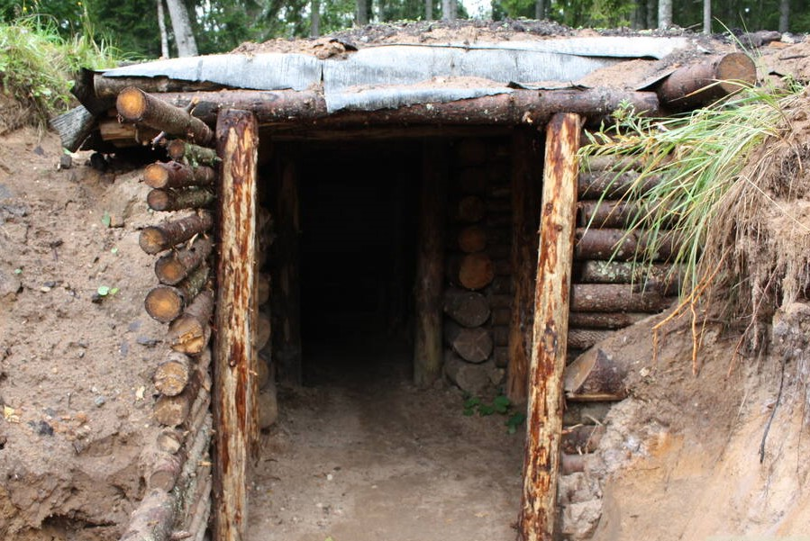

Īle Bunker of National Partisans
The Īle Bunker of National Partisans was the largest such bunker in the Baltic States, housing forces resisting the Soviet occuption following World War 2. Today it is a memorial - a harsh reminder of the brutalities of the past - and a hotspot of military heritage tourism.

History
Built in 1948. in the deep, darks woods surround the village of Īle by Latvian and Lithuanian national partisans, the bunker housed a guerilla group of almost 30 people. The partisans, lead by Kārlis Krauja, were defeated by the Soviet Secret Police forces in 1949.
In 2009, sixty years after the final battle at the fortress, the destroyed remains of the bunker were rebuilt - the the bunker can now be visited and entered. Within it, a few few under the grund, a visitor will find narrow sleeping racks, a table, even an oven for heating.
Area
The bunker and the adjacent memorial can be found halway between the villages of Īle and Zebrene. The nearby area is a mixed forest, popular as a mushroom and berry picking sport among locals. The woods are a beautiful, but challening terrain for hiking - there is a large number of undocumented trails, smaller and larger hills and uncountably many swampy areas.
Īle Estate - a 19th century estate. Since after World War I, the complec has served as a sanatorium, both general and specifically for tuberculosis, and as a hospital for mentally ill patients and chronic alcoholics. The complex has been abandonded and in disrepair for approximately two decades now.
Spārnu Hillfort - an ancient Semigalian fortress location next to the Spārnu lake. Once an important politcal Semigallian centre by the name of Spārnene, notable for particularly steep inclines and very long resistance against the Teutonic Order, the hilltop now is an open-air amphitheatre, hosting musical performances by ethnic, classic and contemporary artists.
The Īle Open-Air Stage is built on the stone foundations of what was once a servant building in the Īle estate. The building later served as the Īle primary school, until it was destroyed in a fire in the late 1990s. Today, the open-air stage hosts concerts and celebrations on public holidays, traditional celebrations and the annual local "Dziesminieki" festival in August.
PROMO2
PROMO3